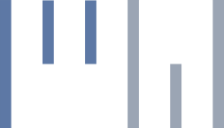

PL
życie, ślub, wydarzenia
fotografia reportażowa
i kreacyjna
grafika, muzyka
© Piotr Wójcik
Strona używa cookies.
„Rozumiem.”
Dalej >>
EN
lifestyle, weddings, events
photojournalism
conceptual photography
graphics and music
© Piotr Wójcik
The site uses cookies.
"I understand and agree."
Continue >>